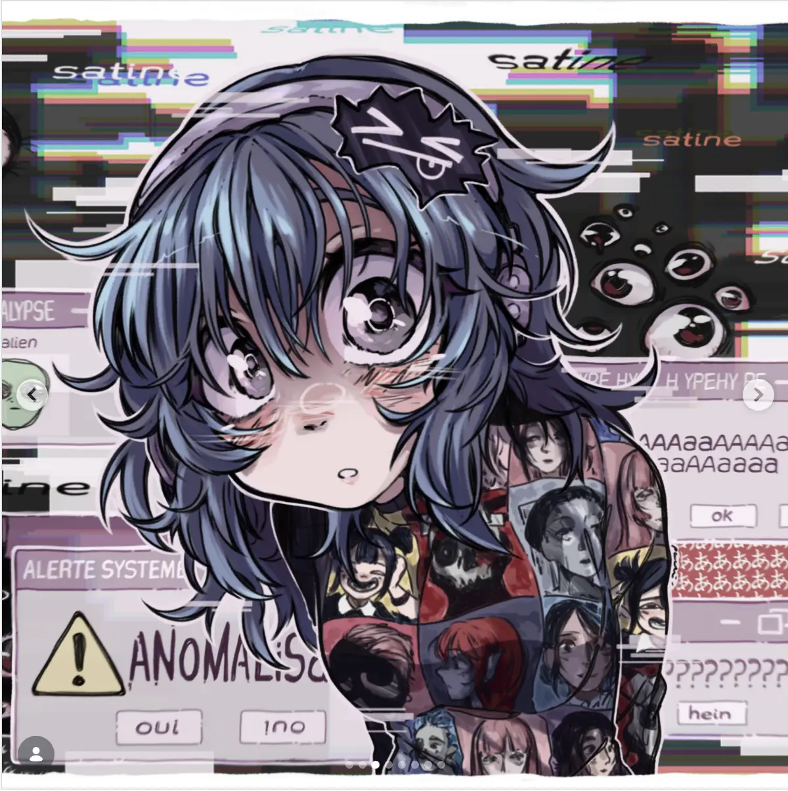
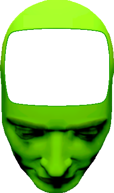

SATINE
10€
35€
Barrettes

Poster

je suis SATINE la celebre chanteuse qui fait de la musiuqe. je fais des sons qui font
bzzzt et parfois piou piou.

PUB M2
~440px de large
~440px de large
by Shiraw
🎨
fan-art #1 (placeholder)
🖼️
fan-art #2 (placeholder)
✏️
fan-art #3 (placeholder)
🖌️
fan-art #4 (placeholder)
📺
fan-art #5 (placeholder)
💖
fan-art #6 (placeholder)
⭐
fan-art #7 (placeholder)
🎤
fan-art #8 (placeholder)
🧷
fan-art #9 (placeholder)
📼
fan-art #10 (placeholder)
fan-art #11 (placeholder)
🐈
fan-art #12 (placeholder)